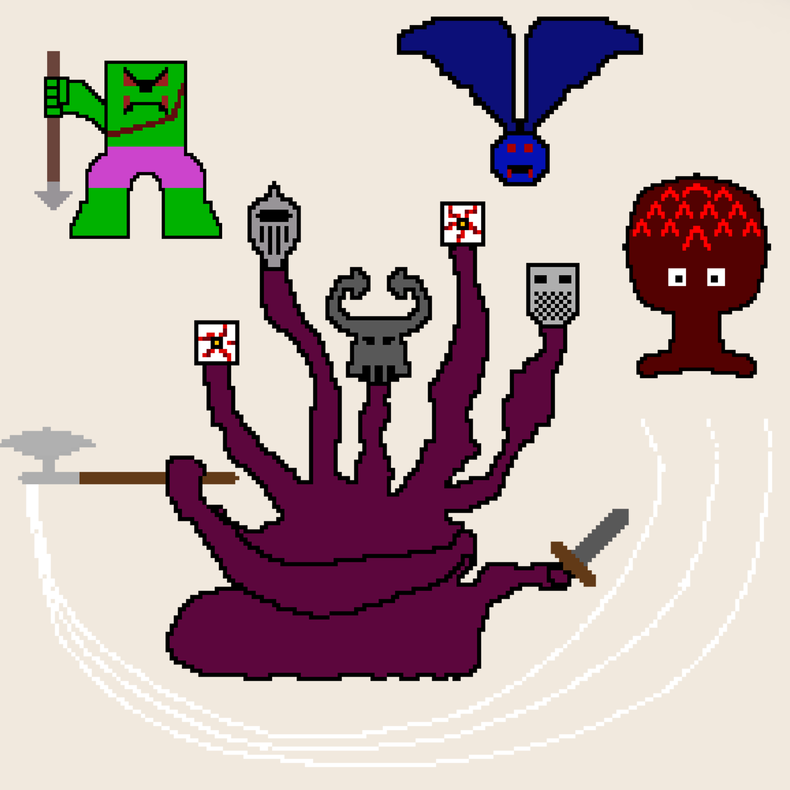

In a far away place, in another time, a King was the protector of his kingdom. Everyone loved him, because he was the most benevolent King they had had. He cared for every single person in his kingdom and since his first day, vowed to put every life in his kingdom bfore his own. The people, although they loved him, thought this was just hyperbole, the king would not put his life last, he was human, and humans were selfish.
Time passed, and everyone forgot about this promise, the kingdom was at the longest period of peace they had enjoyed, and there was no way to destroy that. Or so they thought. One day, at the crack of dawn, the people woke up to see their king walking the streets, with his trusty sword and bow, a bad of bombs and many more items. He was walking with purpose, like never before, and the people were scared. What was happening? Why was their king armed to the teeth?
The answer came as a roar out of the forest. The monsters had allied before The Boss, a mythical five headed monster that had been rumored ot kill countless soldiers. This was the moment where the people remember their Kings promise, the one they had cast out as an exageration. The moment the King stepped out of the fortress walls, order his men to close them, and told them to keep them that way until he was back the people realized, they king was ready to sacrifice his live to save theirs, and they hope he wouldn’t have to, but they couldn’t do anything now.
This is how the story transpired up until the moment the player comes in. The moment the game start, the palyer is in the middle of the woods, having lost everything but his trusty sword, and he has to battle his way back to the castle, which has, right outside the gates, a waiting Boss who wants to take controll of the kingdom.
At the start of the game, the player can only move and attack with his sword, and eventually, he is able to get Bombs, Potions and a Bow&Arrow. The Bombs and Potions have a counter at the bottom, a counter that shows how many of these the player has left. The Arrows for the Bow are unlimited.
The layout of the game is a 3x3 screen of frames (of which the player only sees one at a time) and two separate frames that are caves, which the player can access at different points in the game. What the player does to access these is walk up to the different parts of the border of the screen that lead to other frames, and when he collides with these, the player will be transported to the new screen.
There are 4 enemies throughout the game:
There are only two things required when installing Medieval Quest. 1. Make sure to have PyGame installed. To install pygame in Linux run the following commands:
$ apt-get build-dep python-pygame
$ apt-get install mercurial python-dev python-numpy ffmpeg libsdl-image1.2-dev libsdl-mixer1.2-dev libsdl-ttf2.0-dev libsmpeg-dev libsdl1.2-dev libportmidi-dev libswscale-dev libavformat-dev libavcodec-dev
$ pip install pygame
2. Go to the main game file (`game.py`) and in the second line,
change the path takes to the Levels folder to your own path on your computer.